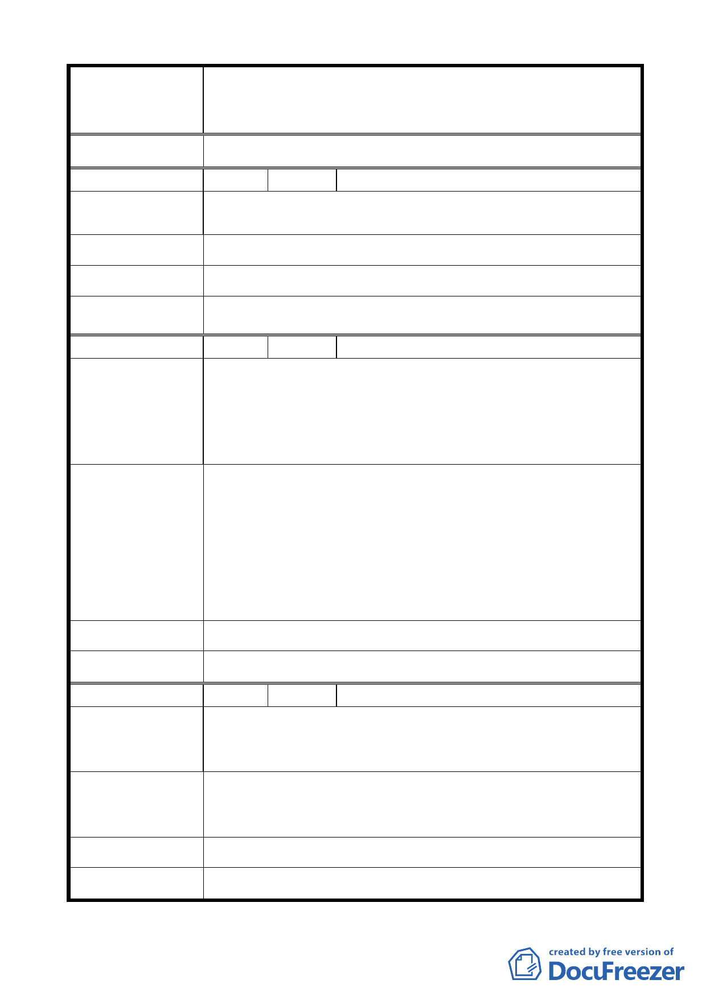

變更臺北市中山區北安段三小段 297-1 地號等20 筆高職
案 名 用地為機關用地（供國防部國防專區使用）及抽水站用地主
要計畫案
大 會 決 議 同編號 5 決議。
編 號 17 陳情人 郭桂蘭
錢用刀口建設在更迫切的地方，臺北市急需抽水站地方大直
陳 情 理 由 地區並非首要，請重審。
建 議 辦 法 抽水站請建在真正迫切需要地區。
市 府 回 覆 意 見 同編號 5（二）市府回應說明。
大 會 決 議 同編號 5 決議。
編 號 18 陳情人 王秀雯
1. 大直抽水站抽水量不足造成淹水，是否是現有抽水站機
組老舊。
陳情理由
2. 國防專區使用造成現有住戶（居民）困擾。
3. 臺北市可用地區不多，寸土寸金，不需要多於浪費。
1. 現有的抽水站功能改善，機組汰舊換新，應可改善抽水
量不足。
2. 國防部應安置居民搬遷，而不影響居民住的地方。
建議辦法
3. 臺北市應多蓋一些平價住宅，讓一些買不起的人也能有
住的權利。
4. 如非得使用這塊地方，請先安置後拆遷。
市 府 回 覆 意 見 同編號 5（二）、（三）市府回應說明。
大 會 決 議 同編號 5 決議。
編 號 19 陳情人 謝適存
1. 大直建抽水站是否有急切需要。
陳 情 理 由 2. 國防專區造成現有住戶困擾。
3. 臺北市可用地區寸土寸金，不可浪費。
1. 現有抽水站功能應改善，機組汰舊換新，應可改善。
建 議 辦 法 2. 國防部應先安置居民，且不影響居民住的地方。
3. 應多蓋一些平價住宅，善待弱勢。
市 府 回 覆 意 見 同編號 5（二）、（三）市府回應說明。
大 會 決 議 同編號 5 決議。
- 15 -